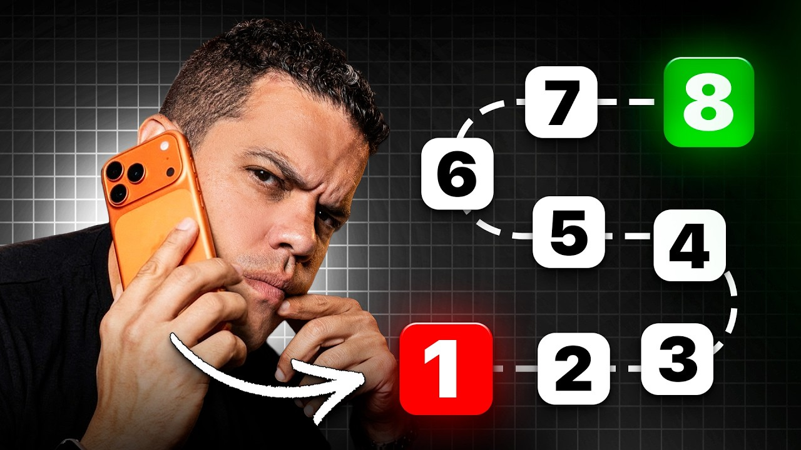
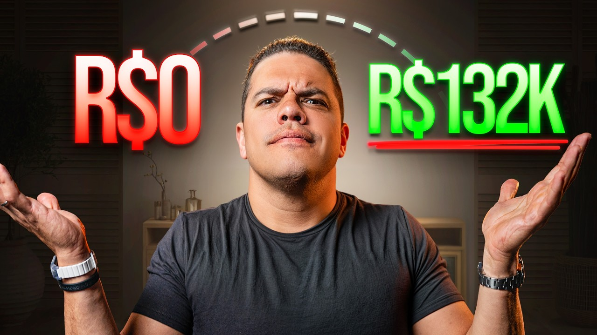
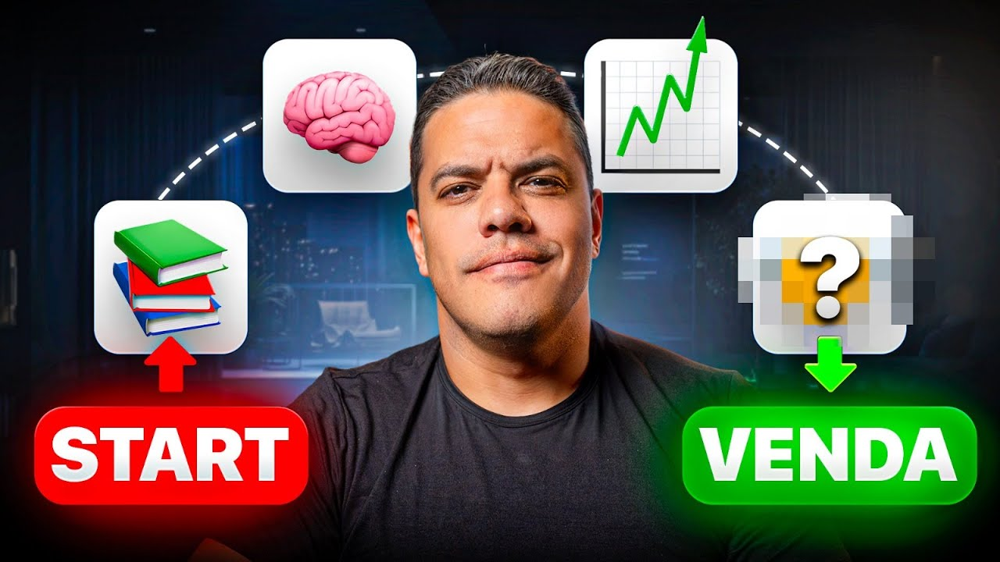
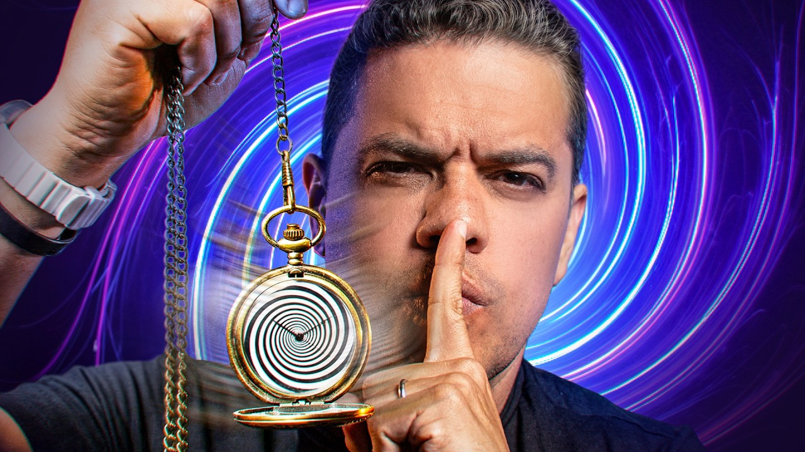
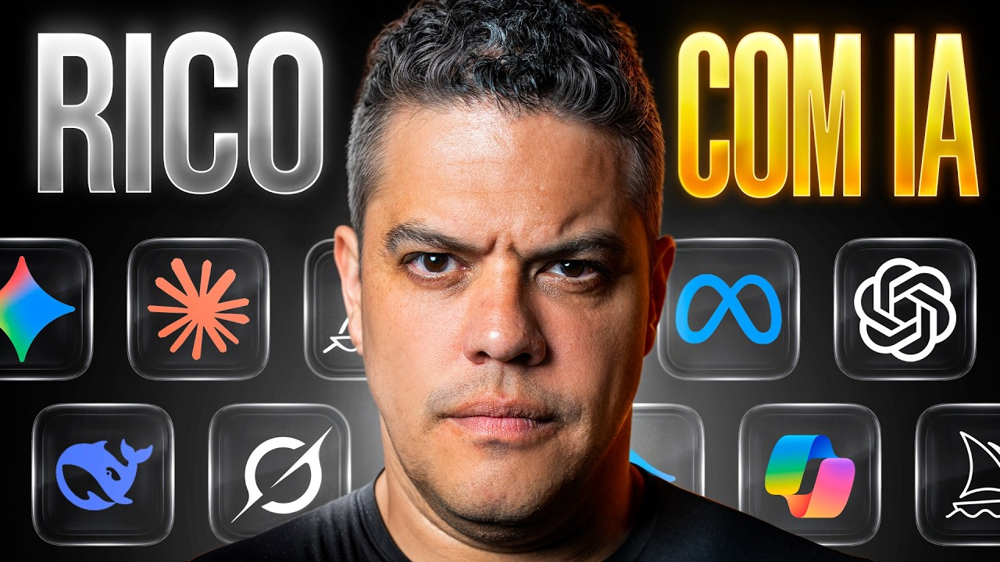
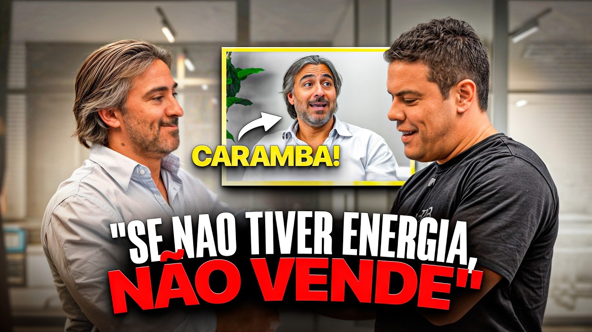
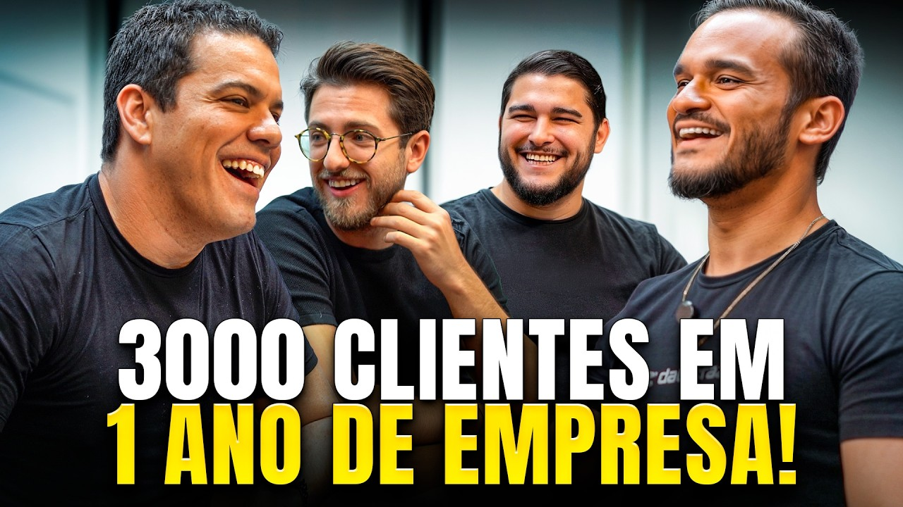
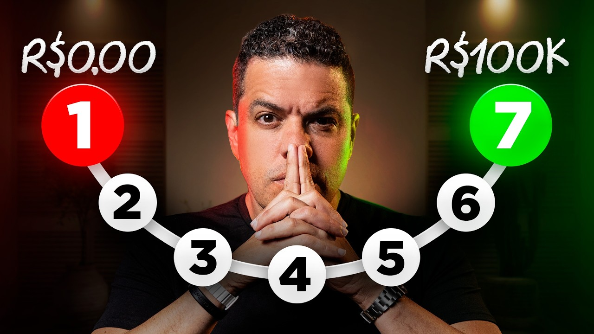

▶8 TÉCNICAS DE VENDAS POR TELEFONE QUE SÃO INFALÍVEIS
'8 técnicas de vendas por telefone que são infalíveis' — re-upload do clássico (194k histórico) com nova roupagem. Listicle de busca pura.
Por que ele escolhe cada tema e como impacta cada persona. Recorte: vídeos long-form de 2026 (13). 197 mil inscritos · o YouTube captura INTENÇÃO de busca (oposto do IG, que captura atenção) e monetiza em camadas — afiliado + Telegram + Desafio R$97.
No YouTube o jogo é SEO de dor operacional: ele escolhe os temas que o vendedor e o gestor DIGITAM na busca. Não é "último mês" — é acervo perene. A mesma tese ("vender é sistema/método, não talento") aparece, mas o veículo é a aula longa e o destino é monetização em camadas. Um tema só entra se fizer um destes três trabalhos:
O YouTube é SEO: ele escolhe temas que o profissional DIGITA ('como vender por telefone', 'quebrar objeção'). Captura intenção — o oposto do IG, que captura atenção no scroll.
Afiliado Pipedrive/Amazon/SEGSMART no caminho fatura mesmo de quem não vira cliente. Receita passiva enquanto o funil principal roda.
Telegram (lista própria) + Desafio R$97 → diagnóstico → high-ticket. O vídeo gratuito é topo; a conversão é externa e em camadas.
A grande diferença pro IG: aqui o vendedor (P3) é o consumidor nº1, porque é ele que busca o how-to. O decisor (P1) entra pela camada nova de IA e pelos cases. O público vem mais quente (busca ativa) e qualificado.
Diferente do IG (onde é só espelho), no YouTube o vendedor é o público nº1. É ele que digita 'como quebrar objeção', 'técnica de cold call', 'SPIN selling' na busca. O YouTube serve o operador diretamente com how-to — e monetiza esse tráfego via afiliado (Pipedrive/Amazon) mesmo quando ele não compra nada.
Procura método pra estruturar e treinar a equipe ('como multiplicar vendas', 'gerar leads todo dia'). Consome as aulas mais estratégicas e os cases. É quem leva o método pra dentro da empresa e vira ponte pro high-ticket.
O dono não busca 'cold call', mas é fisgado pelos temas de IA ('IA vai te tornar milionário em 2026'), pelos cases de crescimento ('crescem 40% ao mês') e pelo mindset ('se começasse do zero'). É a camada de 2026 que mira o decisor.
Quem cai por busca ampla sem intenção de compra. O YouTube captura esse tráfego pro Telegram (owned audience) e pro afiliado — transforma curiosidade em lista proprietária que o funil nutre depois.
A mecânica do canal: capturar intenção de busca, entregar aula densa, gamificar comentário, monetizar o tráfego de passagem com afiliado e nutrir pro funil unificado.
Listicle com número e promessa máxima ('8 técnicas', '7 únicas coisas') casado com a query que o vendedor digita. SEO puro.
Conteúdo técnico denso de 8–15min. Constrói autoridade e tempo de tela (que o algoritmo premia).
'Se bater 200 comentários, libero o script.' Engajamento gamificado barato — vídeos com desafio chegam a 350–405 comentários.
Pipedrive / Amazon / SEGSMART embutidos como 'ferramenta necessária'. Monetiza o tráfego de passagem sem vender produto próprio.
Telegram (owned audience) + Desafio R$97 (lord-of-sales.com/desafio-v2). Em 2026 todo vídeo converge nesse mesmo tripwire.
No YouTube o lead já quer aquilo (digitou a busca). Vem mais quente e qualificado que o scroll frio do IG.
'3 segredos de vendas' rende views há anos. Em 2026 ele RE-SOBE os campeões (telefone, SPIN, objeções) com título/thumb novos — reaproveita o ativo.
Quem nunca vai comprar o high-ticket ainda clica no Pipedrive/Amazon. Receita passiva sobre o volume.
Tira o lead da plataforma pra uma lista própria (t.me/CanaldoTR) que ele controla e nutre — não depende do algoritmo.
O prêmio concreto ('libero o script') gera volume de comentário que o algoritmo lê como interesse → mais alcance.
A virada do ano: o YouTube saiu do 'só Telegram/Pipedrive' e passou a empurrar o MESMO Desafio R$97 do IG/LinkedIn. Funil unificado.
Dois blocos: o acervo operacional reciclado (cold call, SPIN, objeções, prospecção) que captura busca do vendedor/gestor, e a camada nova de 2026 (IA, cases, mindset) que mira o decisor. Tudo converge no Desafio R$97.
A dor operacional mais buscada do vendedor B2B. É um dos evergreens campeões do canal, RE-SUBIDO em 2026 com título/thumb novos. Captura quem digita 'como vender por telefone' e demonstra competência técnica na prática.
P3 é o alvo direto (busca a técnica). P2 usa pra treinar o time.

▶O acervo de método de venda consultiva: SPIN, as 'únicas coisas que importam', react de venda real. É o coração da proposta de valor (vender por método, não por talento) — a mesma tese do IG, mas aqui ensinada em profundidade pra quem busca aprender.
P3/P2 aprendem o método. P1 vê que existe sistema replicável (puxa pro diagnóstico).

▶
▶'Como quebrar qualquer objeção' é busca perene de todo vendedor — a dor mais relatable do comercial. Outro evergreen campeão (213k histórico) reciclado em 2026.
P3 direto (a objeção é a dor diária dele). P2 aplica no time.

▶Como gerar demanda de forma previsível — a ponte entre a dor operacional do vendedor e a tese de 'máquina de vendas' do produto. Tema que conecta busca operacional com a oferta de sistema.
P2 (responsável por gerar pipeline) e P3 (SDR). Liga direto na promessa do Desafio.
A grande virada de 2026: metade da energia nova vai pra IA em vendas. Sai do how-to operacional e mira o DECISOR com FOMO ('milionário em 2026') e prova de operação real ('8x de retorno'). É a narrativa de diferenciação que posiciona o software/IA (Prospct.IA) e justifica o ticket alto.
P1 é o alvo (medo de obsolescência + eficiência/custo). P2 pensa na operação.

▶
▶Autoridade emprestada verificável (igual ao IG): pega um case real de crescimento e destrincha o segredo. Foi o vídeo MAIS visto de 2026 — o formato 'revelaram o segredo' fecha o loop de curiosidade e atrai o decisor que quer o mesmo resultado.
P1/P2 projetam a própria empresa no case. Curiosidade ('qual é o segredo?') segura a retenção.

▶Versão YouTube do pilar de vulnerabilidade/origem do LinkedIn. 'Se eu começasse do zero' constrói identificação e ancora a narrativa 'meu método funciona porque eu vivi isso'. Atrai quem está começando ou recomeçando.
P1/P3 projetam a própria jornada. Constrói o vínculo emocional que a técnica não cria.

▶O mesmo motor de newsjacking do IG, em formato longo: pega um tema cultural (marcas de luxo) e faz a releitura contraintuitiva ligada a vendas/percepção de valor. Fura a bolha técnica e atrai público mais amplo.
P1/P4 entram pelo tema cultural; a lição puxa pra valor/preço (tema T3 do IG).
Os campeões (telefone, SPIN, objeções) são re-subidos com título/thumb novos. O canal é um ativo de SEO que rende views por anos.
Afiliado no caminho (Pipedrive/Amazon/SEGSMART) + Telegram owned + Desafio R$97. Cada visita pode render por 3 rotas diferentes.
Todo vídeo do ano empurra o MESMO Desafio R$97 dos outros canais — o YouTube deixou de ser ilha e virou braço do funil unificado.
A audiência do YouTube busca ativamente (não passa por scroll) — engaja muito mais (comentário mediana ~109 no top) e é mais qualificada.
Em ~80% dos vídeos ele pede like/inscrição ANTES de entregar valor (0:30–2:00), na janela mais cara de retenção. Quebra o momentum do hook.
Os CTAs de conversão vivem só na descrição — raramente há ponte VERBAL pro Telegram/Desafio/Pipedrive. Deposita 100% da conversão em quem abre a descrição.
3 de cada 4 vídeos morrem com <5k views. Muito conteúdo produzido sem curadoria/repackaging dos evergreens que funcionam.
Boa parte da monetização de topo é Pipedrive/Amazon (receita terceirizada). Se o afiliado muda regra/comissão, a receita de topo cai.